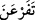

Hâfız der ki:
Bu menzilden yükümü yükleyip yola düştüğüm,
Refiklerimin haberimi köyünden sordukları güne ne mutlu!
43. Fir’avn’a gidin. Çünkü o, iyiden iyiye azdı.
“Fir’avn’a gidin,” Mûsâ (a.s.) yalnız olduğu halde ona böyle hitap edilmesi, ya
Mûsâ’ya verilen emrin Hz. Mûsâ ile Hz. Hârun’un ikisine de verilmiş gibi
olduğundandır (tağlîb), ya da Hz. Mûsâ ile Hz. Hârun bir araya geldikten sonra
olmuştur. Gitme emrinin tekrâr edilmesi ise daha sonra gelecek şeylerin ona
dayanmasındandır.
“Fir’avn” kelimesi Arapça olmayan bir kelimedir. Velîd b. Mus’ab’ın lâkabıdır. Bir
insan sapıklıkta ileri gider, ahlâkı ve fiilleri Fir’avn’a benzerse “__WORD__ (Fir’avnlaştı)”
denir. Aynı şekilde şeytana benzeyenlere “__WORD__ (İblisleşti)” denir. Bu sebeble azgınlara
“Fir’avnlar ve İblisler” denir.
“Çünkü o iyiden iyiye azdı.” “__WORD__ isyânda sınırı iyice aşmak demektir. Yâni
Fir’avn, rablik iddiasıyla kulluk sınırını çiğnedi.
el-Arâis’te şöyle der: “Allah Teâlâ Fir’avn’a karşı delil olması ve dâvâsındaki
yalancılığının ortaya konması için Mûsâ ve Hârun (a.s.)’ı ona göndermiştir. Ayrıca bu,
Allah’tan bir delil üzere olmayan bütün iddiâ sâhiplerine bir tehdiddir.
Düşmanlara peygamber gönderilmesinin hikmeti, onların insanları Allâh’a hidâyet
etmekten âciz olduklarını bilmelerini sağlamaktır. Başkalarının hidâyetinden âciz olan
kimse, kendi nefsini de hidâyete erdiremez. Başkasını tedâvi edemeyen doktorun
kendisini de tedâvi edemediği gibi. Yine bu, onların Allâh’ın hususi ikramlarının
sebeplere bağlı olmadığını bilmeleri ve lütfuyla verdiği nimetler sebebiyle Allâh’a
şükretmeleri içindir. Belki böylece gayb gözüyle Habib Neccâr, Fir’avn’un
yakınlarından bir adam, Fir’avn’un karısı ve büyücüler gibi kendisinde istîdâd olan
kâfirleri Allâh’ın lütfuyla yakalayıp kazanırlar.
İbn Atâ der ki: “Her ne kadar Mûsâ (a.s.) zâhirde Fir’avn’a gönderilmişse de aslında
o sihirbazlara gönderilmiştir. Çünkü Allah peygamberlerini düşmanlarına gönderir.
Halbuki onların kendi katında bir değeri yoktur. Allah onlara peygamberlerini bu
sebeple göndermez. Allah düşmanı olan kâfirlerin içinden mü’min dostlarını çıkarmak
için peygamberlerini düşmanlarına gönderir.
Hâfız, vücud iklimine senden ötürü geldi
Vedâsına bir kadem koy ki, artık gitse gerektir